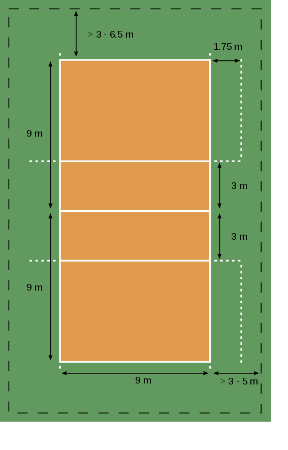
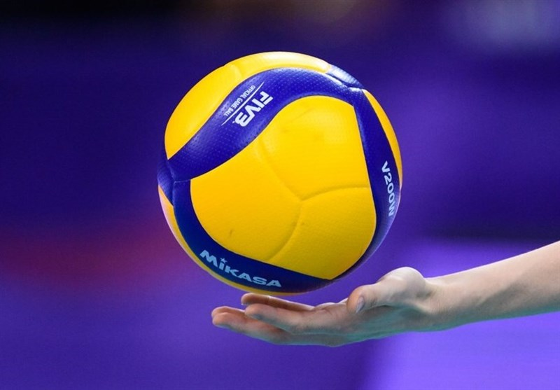
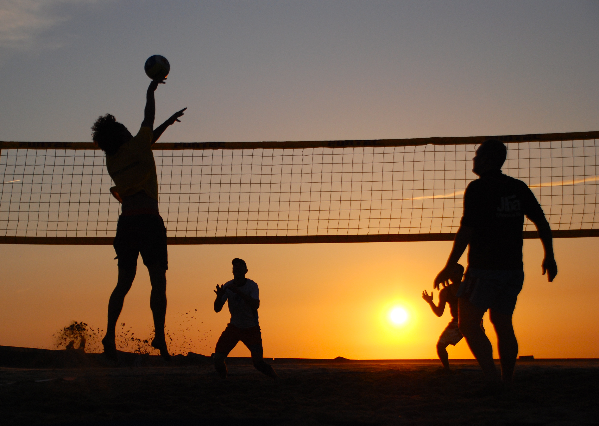
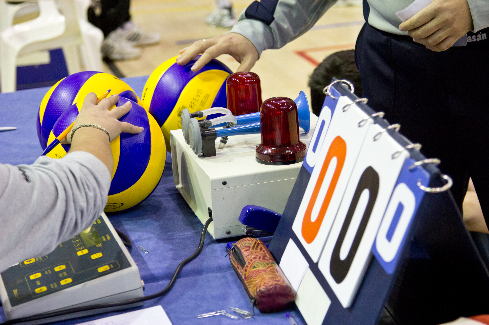

Rules
- The court dimensions
- The ball
- Gameplay
- Scoring
- Libero
The court dimensions
A volleyball court is 9 m x 18 m, divided into equal square halves by a net with a width of 1 m. The top of the net is 2.43 m above the center of the court for men's competition, and 2.24 m for women's competition, varied for veterans and junior competitions.
The minimum height clearance for indoor volleyball courts is 7 m, although a clearance of 8 m is recommended.
A line 3 m from and parallel to the net is considered the "attack line". This "3 meter" line divides the court into "back row" and "front row" areas (also back court and front court). These are in turn divided into 3 areas each: these are numbered as follows, starting from area "1", which is the position of the serving player.
After a team gains the serve, its members must rotate in a clockwise direction, with the player previously in area "2" moving to area "1" and so on, and with the player from area "1" moving to area "6". Each player rotates only once after the team gains possession of the service; the next time each player rotates will be after the other team wins possession of the ball and loses the point.
The court is surrounded by an area called the free zone which is a minimum of 3 meters wide and in which the players may enter and play within after the service of the ball. All lines denoting the boundaries of the court and the attack zone are drawn or painted within the dimensions of the area and are therefore a part of the court or zone. If a ball comes in contact with the line, the ball is considered to be "in". An antenna is placed on each side of the net perpendicular to the sideline and is a vertical extension of the side boundary of the court. A ball passing over the net must pass completely between the antennae (or their theoretical extensions to the ceiling) without contacting them.
The ball
FIVB regulations state that the ball must be spherical, made of leather or synthetic leather, have a circumference of 65-67 cm, a weight of 260-280 g and an interior air pressure of 4.26 to 4.61 psi.
Gameplay
Each team consists of six players. To get play started, a team is chosen to serve by coin toss. A player from the serving team throws the ball into the air and attempts to hit the ball so it passes over the net on a course such that it will land in the opposing team's court (the serve). The opposing team must use a combination of no more than three contacts with the volleyball to return the ball to the opponent's side of the net. These contacts usually consist first of the bump or pass so that the ball's trajectory is aimed towards the player designated as the setter; second of the set (usually an over-hand pass using wrists to push finger-tips at the ball) by the setter so that the ball's trajectory is aimed towards a spot where one of the players designated as an attacker can hit it, and third by the attacker who spikes (jumping, raising one arm above the head and hitting the ball so it will move quickly down to the ground on the opponent's court) to return the ball over the net. The team with possession of the ball that is trying to attack the ball as described is said to be on offence.
The team on defence attempts to prevent the attacker from directing the ball into their court: players at the net jump and reach above the top (and if possible, across the plane) of the net to block the attacked ball. If the ball is hit around, above, or through the block, the defensive players arranged in the rest of the court attempt to control the ball with a dig (usually a fore-arm pass of a hard-driven ball). After a successful dig, the team transitions to offence.
The game continues in this manner, rallying back and forth until the ball touches the court within the boundaries or until an error is made. The most frequent errors that are made are either to fail to return the ball over the net within the allowed three touches, or to cause the ball to land outside the court. A ball is "in" if any part of it touches the inside of a team's court or a sideline or end-line, and a strong spike may compress the ball enough when it lands that A ball which at first appears to be going out may actually be in. Players may travel well outside the court to play a ball that has gone over a sideline or end-line in the air.
Other common errors include a player touching the ball twice in succession, a player "catching" the ball, a player touching the net while attempting to play the ball, or a player penetrating under the net into the opponent's court. There are a large number of other errors specified in the rules, although most of them are infrequent occurrences. These errors include back-row or libero players spiking the ball or blocking (back-row players may spike the ball if they jump from behind the attack line), players not being in the correct position when the ball is served, attacking the serve in the frontcourt and above the height of the net, using another player as a source of support to reach the ball, stepping over the back boundary line when serving, taking more than 8 seconds to serve, or playing the ball when it is above the opponent's court.
Scoring
A point is scored when the ball contacts the floor within the court boundaries or when an error is made: when the ball strikes one team's side of the court, the other team gains a point; and when an error is made, the team that did not make the error is awarded a point, in either case paying no regard to whether they served the ball or not. If any part of the ball hits the line, the ball is counted as in the court. The team that won the point serves for the next point. If the team that won the point served in the previous point, the same player serves again. If the team that won the point did not serve the previous point, the players of the team acquiring the serve rotate their position on the court in a clockwise manner. The game continues, with the first team to score 25 points by a two-point margin awarded the set. Matches are best-of-five sets.